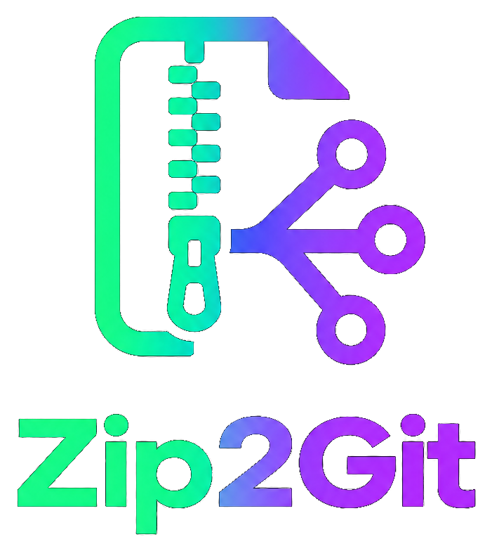

100% client-side · nothing ever touches a serverUpload a complete project straight from your phone or browser — no terminal, no Git install, no desktop client. Zip2Git builds one atomic commit with the GitHub Git Data API and pushes it for you.
Everything happens in the Workspace — connect a token, bring your files, push.
Paste a GitHub token with repo scope and pick or create the destination repository.
Drop a ZIP or select a folder. Every file, including dotfiles and workflow configs, is read straight into the browser.
Review the file tree, then push. Blobs, tree, commit and ref update happen as one atomic call sequence.